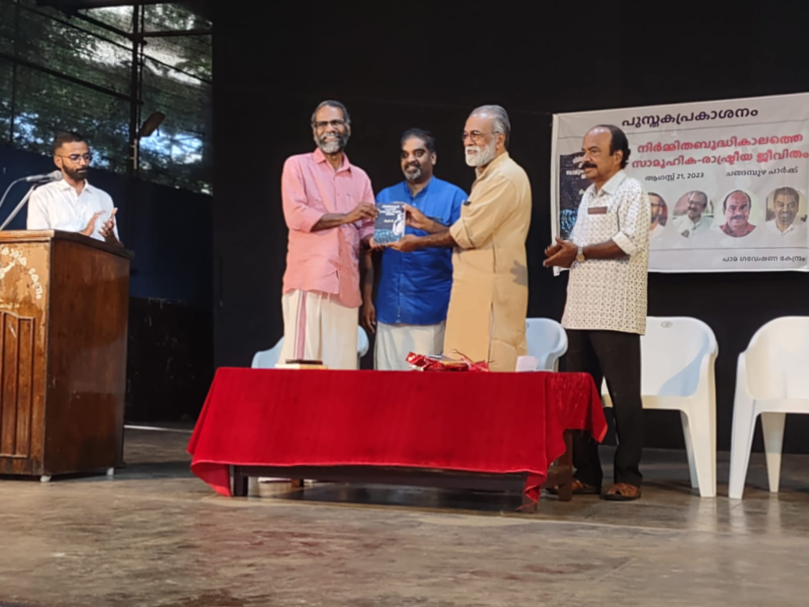
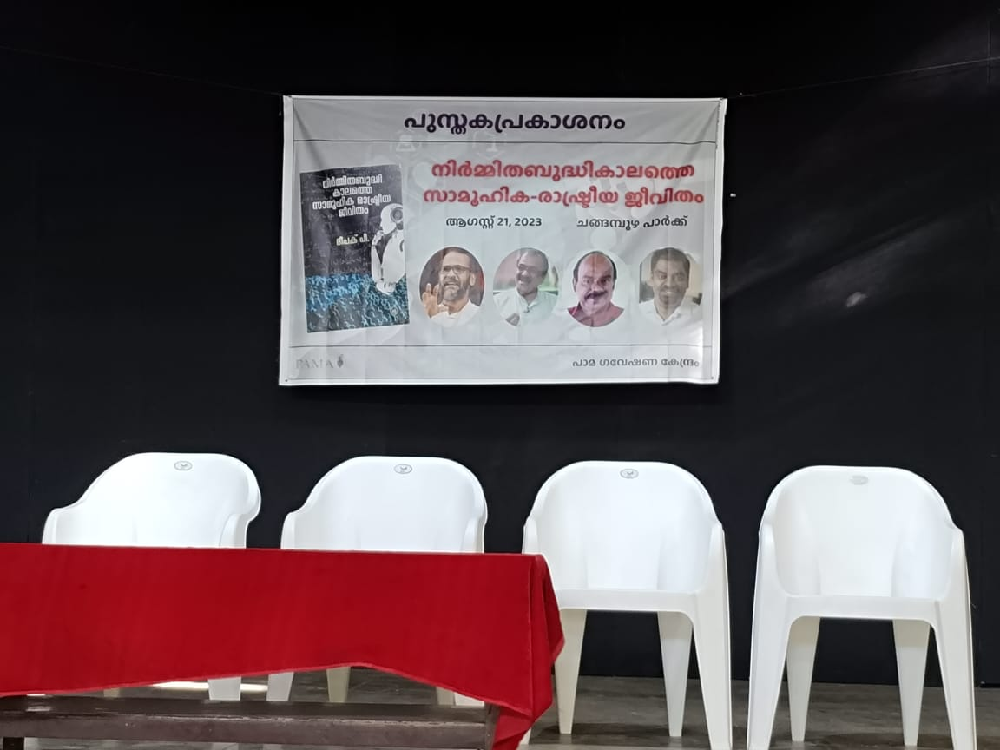
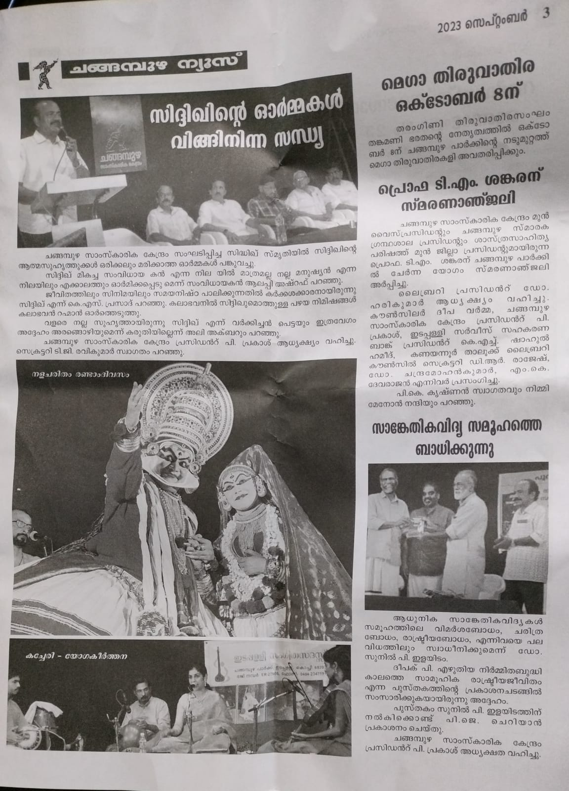

നിർമ്മിതബുദ്ധികാലത്തെ സാമൂഹിക-രാഷ്ട്രീയ ജീവിതം
ഘടന: പുസ്തകം അഞ്ചു ഭാഗങ്ങളായിട്ടാണ് തിരിച്ചിട്ടുള്ളത്. ഇവയിലൂടെ നിർമ്മിതബുദ്ധിയുടെ ഉത്ഭവവും പരിണാമവും അതിന്റെ വിവിധ മേഖലകളും അവയുടെ സാമൂഹിക രാഷ്ട്രീയാവശങ്ങളും വിശകലനവിധേയമാക്കുന്നു.
ആദ്യ ഭാഗത്തിൽ നിർമ്മിതബുദ്ധി എന്ന മേഖലയുടെ ഉത്ഭവവും പരിണാമവും പരിണാമത്തിന് ചാലകശക്തിയായി പ്രവർത്തിച്ച ഘടകങ്ങളും വിശകലനം ചെയ്യുന്നു. ഈ പരിണാമത്തെ ഓട്ടോമേറ്റ് ചെയ്യപ്പെടുന്ന പ്രവൃത്തികളുടെ ഘടന അനുസരിച്ചു വ്യത്യസ്ത ഘട്ടങ്ങളായി തിരിച്ചാണ് പരിശോധിക്കുന്നത്. ഇത്തരം പരിണാമത്തിൽ വലതുപക്ഷ രാഷ്ട്രീയം വഹിച്ച പങ്ക് - കൊളോണിയലിസം, കുത്തകവൽക്കരണം എന്നിവയുൾപ്പെടെയുള്ള മേഖലകൾ - പ്രത്യേകം ശ്രദ്ധയോടെ പ്രതിപാദിക്കുന്നുണ്ട്. ഇതിനോടൊപ്പം നിർമ്മിതബുദ്ധി ഗവേഷണത്തിൽ നൈതികതയിലൂന്നിയ നൂതനമേഖലകളും അവയുടെ മേന്മകളും പോരായ്മകളും കൂടി വിവരിച്ചുകൊണ്ട് ഈ ഭാഗം അവസാനിക്കുന്നു.
രണ്ടാം ഭാഗത്ത് വിവരാന്വേഷണം - വെബ് സെർച്ച് - എന്ന നാം എല്ലാവരും ഉപയോഗിക്കുന്നതും ഏറ്റവും ലളിതവും ഏറ്റവും പ്രചാരമേറിയതും ആയ നിർമ്മിതബുദ്ധി മേഖലയാണ് വിഷയം. വെബ് തിരയലിന്റെ പരിണാമത്തിലെ സവിശേഷ ഘട്ടങ്ങൾ - ഉദാഹരണത്തിന്, പേജ് റാങ്ക് എന്ന ലളിത അൽഗോരിതത്തിന്റെ നിർമ്മിതി - എങ്ങനെ വെബ്ബിന്റെ തന്നെ ഘടനയെ സ്വാധീനിക്കുംവിധം പ്രവർത്തിച്ചു എന്നതുൾപ്പെടെ നിരവധി ഘടകങ്ങൾ ഉദാഹരണങ്ങൾ നിരത്തി പരിശോധിക്കുന്നു. അത്തരം സംഭവവികാസങ്ങളിലൂടെ വെബ്ബിനെ ഒരു വിവരസഞ്ചയം എന്നതിൽനിന്നും ഒരു വാണിജ്യ പ്ലാറ്റുഫോം എന്നതിലേക്ക് പരിവർത്തിപ്പിച്ച രാഷ്ട്രീയഘടകങ്ങൾ കൂടി പരിശോധിക്കുകയും പ്രതിവിധികൾ ആലോചിക്കുകയും ചെയ്തുകൊണ്ട് ഈ ഭാഗം സമാപിക്കുന്നു.
മൂന്നാം ഭാഗത്തിന്റെ വിഷയം സമൂഹമാധ്യമങ്ങളാണ്. ഇവ നാം മനസ്സിലാക്കുന്നതിലും വലിയ തോതിൽ നിർമ്മിതബുദ്ധിയുടെ ഒരു വിഹാരകേന്ദ്രമാണ് എന്ന് ഉദാഹരണങ്ങളിലൂടെ സമർത്ഥിക്കുന്നു. നമ്മുടെ സുരക്ഷയ്ക്കും മനസികാസ്വാസ്ഥ്യത്തിനും കോട്ടം തട്ടുന്ന തരത്തിൽ ഇന്ന് നമ്മുടെ ജീവിതത്തിന്റെ സിംഹഭാഗവും കവർന്നെടുക്കുന്ന തലത്തിലേക്ക് സമൂഹമാധ്യമങ്ങൾ വളർന്നതിനെ വിമർശനബുദ്ധിയോടെ പരിശോധിക്കുന്നു. പല കാര്യങ്ങൾ പരിശോധിക്കുന്നതിനോടൊപ്പം ഉപയോക്താക്കളുടെ ശ്രദ്ധ ശേഖരിച്ചു വാണിജ്യചരക്കാക്കുന്ന ശ്രദ്ധ സമ്പദ്വ്യവസ്ഥ - attention economy - എന്നത് എങ്ങനെയാണ് ഇക്കിളിപ്പെടുത്തുന്നതും വ്യാജമായതും ആയ വാർത്തകളെ സമൂഹമാധ്യമങ്ങളിൽ പ്രോത്സാഹിപ്പിക്കുന്നത് എന്നതും അത്തരം പ്രത്യാഘാതങ്ങൾ ജനാധിപത്യത്തിന്റെ നൈരന്തര്യത്തിന് എങ്ങനെ പ്രതിബന്ധം സൃഷ്ടിച്ചേക്കാം എന്നും വിശകലനം ചെയ്യുന്നു. ഒരു സമൂഹമാധ്യമ ഉപയോക്താവായിട്ടു തുടരുമ്പോഴും എങ്ങനെയാണ് അതിന്റെ ദോഷഫലങ്ങളിൽ നിന്ന് മുക്തിനേടുക എന്നതിലേക്ക് ചില നിർദേശങ്ങൾ മുന്നോട്ടു വെയ്ക്കുകയും കൂടി ഇവിടെ ചെയ്യുന്നുണ്ട്.
നാലാം ഭാഗത്ത് ഒരൽപം കൂടി വിശാലമായ അർത്ഥത്തിൽ നിർമ്മിതബുദ്ധിയുടെ സമൂഹത്തിലെ വ്യാപനത്തെ പരിശോധിക്കുകയാണ് ചെയ്യുന്നത്. നിർമ്മിതബുദ്ധി സാങ്കേതികവിദ്യയുടെ വികാസം എന്ത് തരം മൂല്യങ്ങളെയാണ് സമൂഹത്തിൽ ഊട്ടിയുറപ്പിക്കുന്നതെന്നും എന്ത് തരം മൂല്യങ്ങളെയാണ് ശോഷിപ്പിക്കുന്നത് എന്നും വിശാലമായി പരിശോധിക്കുന്നു. ഉദാഹരണത്തിന്, ചരിത്രകാരനായ ഹരാരി ഇന്നത്തെ ലോകത്തിന്റെ പ്രത്യയശാസ്ത്രം ഡാറ്റയിസം ആണെന്ന് അഭിപ്രായപ്പെടുന്നുണ്ട് എന്ന് കാണുക. ഇതിനോടൊപ്പം തന്നെ സമൂഹത്തിനു ഗുണകരമായും മനുഷ്യന്റെ കർതൃത്വത്തെ ഹനിക്കാത്ത രീതിയിലും എങ്ങനെ മനുഷ്യനും നിർമ്മിതബുദ്ധിക്കും സഹകരിച്ചു പ്രവർത്തിക്കാം എന്നതിനെ പ്രതിപാദിക്കുന്ന പുതിയ ഗവേഷണങ്ങളെ രചയിതാവിന്റെ സ്വന്തം വീക്ഷണകോണിലൂടെ പരിചയപ്പെടുത്തുന്നു.
അഞ്ചാം ഭാഗം അടുത്തിടെ വലിയ പ്രചാരം നേടിയ ചാറ്റ് ജി പി ടി പോലെയുള്ള ഉൽപ്പാദനപരമായ നിർമ്മിതബുദ്ധിയെക്കുറിച്ചുള്ളതാണ്. ഇന്ന് ആഗോളസമൂഹം ഇത്തരം നിർമ്മിതബുദ്ധി സാങ്കേതികവിദ്യകളെ ഒരു വശത്തു അത്ഭുതത്തോടുകൂടിയും മറ്റൊരു വശത്ത് ഭീതിയോടുകൂടിയും ആണ് കാണുന്നത് എന്ന് പറയാം. പല തൊഴിൽ മേഖലകളിലും ചാറ്റ് ജി പി ടി തങ്ങളുടെ തൊഴിൽ കവർന്നെടുക്കുമോ എന്ന ഭീതി നിലനിൽക്കുന്നു. ഇത്തരം ഭീതി അടിസ്ഥാനമുള്ളതാണോ എന്നും ഇത്തരം സാങ്കേതികവിദ്യകളുടെ പരിമിതികൾ എന്തൊക്കെയാണ് എന്നതും ഇവിടെ വിശകലനം ചെയ്യുന്നു. ഇവയുടെ വികാസത്തെ നാം എങ്ങനെ നേരിടണം എന്നും എങ്ങനെ ഉൾക്കൊള്ളണം എന്നും ഉള്ള വിഷയങ്ങളിൽ വിജ്ഞാനസമൂഹത്തിൽ ഉയർന്നുവരുന്ന അഭിപ്രായങ്ങൾ വായനക്കാർക്ക് പരിചയപ്പെടുത്തുകയും ചെയ്യുന്നു.
ലക്ഷ്യം: ജീവിതത്തിന്റെ സമസ്തമേഖലകളിലേക്കും വ്യാപിച്ചുകൊണ്ടിരിക്കുന്ന നിർമ്മിതബുദ്ധിയെ സരളമായി ഏതൊരു സാധാരണ വായനക്കാരനും മനസ്സിലാക്കാൻ സഹായിക്കുന്നവണ്ണം നിരവധിയായ കേരളീയജീവിതവുമായി ബന്ധപ്പെട്ടുള്ള ഉദാഹരണങ്ങളിലൂടെ അവതരിപ്പിക്കുകയും അതിന്റെ വിശകലനം ചെയ്യാനുള്ള ശേഷി വായനക്കാർക്ക് പ്രദാനം ചെയ്യുകയും ആണ് ഈ പുസ്തകത്തിന്റെ വിശാലലക്ഷ്യം. കേരളത്തിലെ പ്രബുദ്ധ സമൂഹത്തിലെ പൊതുമണ്ഡലത്തിലെ ചർച്ചകളിൽ നിർമ്മിതബുദ്ധി വിശകലനവും വിമർശനവും കുറച്ചു കൂടി സാന്ദ്രമായി കടന്നുവരുന്നതിലേക്കായി ഈ പുസ്തകം ഒരു ചെറിയ സംഭാവന നൽകും എന്ന് പ്രതീക്ഷിക്കുന്നു, പ്രത്യാശിക്കുന്നു.
നമ്മളൊക്കെ വിവരാവകാശയുഗത്തിലാണ് ജീവിക്കുന്നത് എന്ന് എല്ലാവർക്കും അറിയാം, നമ്മളിൽ മിക്കവരും ഇന്റർനെറ്റും ഗൂഗിളും ഉപയോഗിക്കുന്നുണ്ട്, എങ്കിലും ഇതിന്റെയൊക്കെ ശാസ്ത്രമോ സാങ്കേതികവിദ്യയോ എന്തിന് അത് എങ്ങനെയൊക്കെയാണ് നമ്മളെ സ്വാധീനിക്കുന്നത് എന്ന് പോലുമോ നമ്മളിൽ മിക്കവർക്കും അറിയില്ല. അതെല്ലാം എന്തിന് അറിയണം, നമുക്ക് അത് ഉപയോഗിച്ചാൽ പോരേ എന്നായിരിക്കും നമ്മുടെ പ്രതികരണം. എന്നാൽ അത് അത്ര സിമ്പിളല്ല. നിർദോഷവുമല്ല. അത് നാം ചിന്തിക്കുന്ന രീതിയെയും തീരുമാനങ്ങൾ എടുക്കുന്ന രീതിയെയും തീരുമാനങ്ങളെ തന്നെയും ഒരുപാടു സ്വാധീനിക്കുന്നുണ്ട്. എന്നുവെച്ചു അവ ഉപയോഗിക്കാതിരിക്കാൻ പറ്റുമോ? ഇല്ല. പക്ഷെ ആ സ്വാധീനം ആവുന്നത്ര കുറയ്ക്കാൻ നമുക്ക് ശ്രമിക്കാം. അതെങ്ങനെ? അതിന് ആദ്യമായി ഇവ എങ്ങനെ പ്രവർത്തിക്കുന്നു എന്നും അവ നമ്മളെ എങ്ങനെ സ്വാധീനിക്കുന്നു എന്നും നാം തിരിച്ചറിയണം. ഡോ. ദീപകിന്റെ ഈ പുസ്തകം അത്ഭുതകരമായ വിധത്തിൽ ലളിതമായി അത് നമുക്ക് പറഞ്ഞുതരുന്നു. ഇലക്ട്രോണിക്സിലോ കമ്പ്യൂട്ടർ സയൻസിലോ യാതൊരു അറിവും പരിചയവും ഇല്ലാത്തവർക്ക് പോലും എളുപ്പം മനസ്സിലാവുന്ന വിധത്തിലാണ് ഇത് എഴുതിയിരിക്കുന്നത്. പല കാര്യങ്ങൾക്കും ധാരാളം ഉദാഹരണങ്ങൾ കൊടുത്തിട്ടുണ്ട്. അവയിൽ പലതും നമ്മുടെ നാട്ടിൽ നാം ദിവസവും കാണുന്ന കാര്യങ്ങൾ. ഗൂഗിളിൽ ഒരു അന്വേഷണം നടത്തുമ്പോൾ നമ്മുടെ മുന്നിൽ എന്തെല്ലാം വിവരങ്ങളാണ് പ്രത്യക്ഷപ്പെടുന്നത്! നമ്മൾ വിചാരിക്കുക ഇതെല്ലം നമ്മെ സഹായിക്കാനായി ഗൂഗിൾ തരുന്നതാണ് എന്നല്ലേ? അങ്ങനെയല്ല, ഗൂഗിളിന് വ്യക്തമായ സാമ്പത്തിക താത്പര്യം ഉണ്ടെന്നു പറഞ്ഞാൽ അത്ഭുതമില്ല. അത് വിശ്വസിക്കാം. അതിനായിട്ടാണല്ലോ അവർ പരസ്യങ്ങൾ കൊടുക്കുന്നത്. എന്നാൽ അതു മാത്രമല്ല, അല്ലാതെ തന്നെ അവർ ഏതേത് വിവരങ്ങളാണ് നമ്മുടെ മുൻപിൽ വയ്ക്കുന്നത്, അവയുടെ ക്രമം എങ്ങനെയാണ് തീരുമാനിക്കുന്നത് എന്നൊന്നും നാം ആലോചിക്കാറില്ല. ഉണ്ടെങ്കിലും അതിലൂടെ ഗൂഗിൾ നമ്മെ കളിപ്പിക്കുമെന്നും നാം വിചാരിക്കില്ല. പക്ഷെ അങ്ങനെയല്ല സ്ഥിതി എന്ന് ദീപക് നമ്മെ പഠിപ്പിക്കുന്നു. മാത്രമല്ല, എങ്ങനെയാണു അവർ അത് ചെയ്യുനന്തെന്നും അതിന്റെ ശാസ്ത്രം എന്തെന്നും കൂടി പറഞ്ഞുതരുന്നു. ഗൂഗിളിൽ ഓരോരോ പേരുകൾ പ്രത്യക്ഷപ്പെടുന്നത് ഏതു ക്രമത്തിലാണ്? അത് എങ്ങനെയാണ് തീരുമാനിക്കുന്നത്? അതിനുള്ള പ്രോഗ്രാം എങ്ങനെയാണു തീരുമാനിക്കുന്നത്? ഇതെല്ലം വളരെ വ്യക്തമായി ദീപക് വിവരിക്കുന്നുണ്ട്. അപ്പോഴാണ് ഗൂഗിളിന്റെ വാണിജ്യ താത്പര്യങ്ങൾ എങ്ങനെയാണ് ജനങ്ങളുടെ അറിയാനുള്ള അവകാശത്തെ അവഗണിച്ചുകൊണ്ട് കമ്പനിക്കു കൂടുതൽ ലാഭമുണ്ടാക്കാനുള്ള വഴി തെളിച്ചുകൊടുക്കുന്നു എന്ന് മനസ്സിലാവൂ. അതുകൊണ്ട് ഗൂഗിളിനെ ഒഴിവാക്കാനോ? ഇന്നത്തെ കാലത്ത് അതും പ്രായോഗികമല്ല. പകരം ഗൂഗിളിനെ തോൽപ്പിച്ച് എങ്ങനെ നമുക്ക് നമ്മുടെ കാര്യം നേടാം എന്നാണ് നോക്കേണ്ടത്. അതിനുള്ള വഴിയും ദീപക് നമുക്ക് കാണിച്ചു തരുന്നുണ്ട്. അതോടൊപ്പം വാണിജ്യ താത്പര്യങ്ങൾ അടക്കി വാഴുന്ന ഇന്നത്തെ സൈബർ ലോകത്ത് ഒരു വിമര്ശനബുദ്ധി വളർത്തിയെടുത്തുകൊണ്ട് എങ്ങനെ നമ്മുടെ താത്പര്യങ്ങൾ സംരക്ഷിക്കാം എന്ന് കൂടി ഈ പുസ്തകം നമ്മെ മനസിലാക്കുന്നു. ഏതു വിധത്തിൽ നോക്കിയാലും വിലപിടിച്ച ഒരു പുസ്തകമാണ് ഇത്. ഇത്തരമൊരു പുസ്തകം എത്രയോ നേരത്തേ വരേണ്ടതായിരുന്നു. ഇപ്പോഴെങ്കിലും നമുക്ക് കിട്ടിയല്ലോ. ഭാഗ്യം!
ആർ വി ജി മേനോൻ
നാമിന്നു ജീവിക്കുന്നത് നിസ്സംശയമായും ഒരു ഡിജിറ്റൽ ലോകത്താണ്. വാർത്തയും വിവരങ്ങളും അടങ്ങുന്ന വെബ്സൈറ്റുകൾ എന്നതിൽനിന്നും വേണ്ട മിക്കവാറും കാര്യങ്ങളും ഇന്റർനെറ്റിന്റെ സഹായത്തോടെ ലഭിക്കുന്ന ഒരു സ്ഥിതിവിശേഷത്തിലേക്ക് നാം എത്തിക്കഴിഞ്ഞു. അതിപ്പോൾ വീട്ടാവശ്യത്തിനായുള്ള പലവ്യഞ്ജനങ്ങൾ ആയാലും, ഗൃഹോപകരണങ്ങൾ ആയാലും, വീട്ടുജോലിക്കുള്ള സഹായി ആയാലും, എന്തിനു ജീവിതപങ്കാളിയെ കണ്ടെത്തൽ വരെ ഇപ്പോൾ പ്രധാനമായും ഇന്റർനെറ്റ് സേവനങ്ങളിലൂടെയാണ് നടക്കുന്നത്.
ഇന്റർനെറ്റ് പൂർവ്വ ലോകത്തിന്റെ ക്രമങ്ങളിൽനിന്നും മൂല്യപരമായ എന്ത് മാറ്റമാണ് നമുക്ക് അനുഭവപ്പെടുന്നത് എന്നത് നാം പലപ്പോഴും ചിന്തിക്കാറില്ല. ഒരുദാഹരണം എടുക്കാം. ഏതാനും ദശാബ്ദങ്ങൾക്കു മുമ്പ് സേവനദാതാക്കളെ കണ്ടെത്താൻ നാം പ്രധാനമായും ഉപയോഗിച്ചിരുന്നത് ‘യെല്ലോ പേജസ്’ എന്ന വാണിജ്യസംരംഭങ്ങളുടെ ഡയറക്ടറി ആയിരുന്നു. ടെലിഫോൺ ഡിപ്പാർട്മെന്റ് വർഷാവർഷം ഇറക്കുന്ന യെല്ലോ പേജസിൽ ഏതു വാണിജ്യസ്ഥാപനത്തിനും പേര് ചേർക്കാം; ഒരു നിശ്ചിത തുക അടയ്ക്കണം, സുതാര്യമായതും പരസ്യമായതും ആയ ഒരു പ്രക്രിയയിലൂടെ. ഒരു ഉപഭോക്താവ് തനിക്കു വേണ്ട സേവനം ഏതാണെന്നു വെച്ചാൽ ഡയറക്ടറിയിൽ ആ വിഭാഗത്തിൽ ചെന്ന് നോക്കുന്നു, കണ്ടെത്തുന്നു, ഫോൺ വിളിച്ചു ബന്ധപ്പെടുന്നു, അങ്ങനെ കാര്യം നടത്തുന്നു. യെല്ലോ പേജസിൽ ചേർത്തിട്ടില്ലാത്ത സേവനദാതാക്കളെ കണ്ടെത്താൻ സാധിക്കില്ലെങ്കിലും അതിനകത്തു വിവരാന്വേഷണത്തിന്റെ കടിഞ്ഞാൺ ഉപഭോക്താവിന്റെ കയ്യിൽ തന്നെയാണ്. ഇന്നാണെങ്കിൽ നാം പലപ്പോഴും ചെയ്യുക, വേണ്ട സേവനത്തെക്കുറിച്ചു ‘ഗൂഗിൾ അടിച്ചു’ നോക്കുക എന്നതാണ്. നമുക്കാവശ്യമുള്ള സേവനത്തെക്കുറിച്ചു രണ്ടു വാക്ക് സെർച്ച് എഞ്ചിന് നൽകുക; അപ്പോൾ കുറെ ഫലങ്ങൾ ദൃശ്യമാകും. അതിൽ ആദ്യം കാണുന്ന ചിലതിൽ നാം ക്ലിക്ക് ചെയ്യും, അതിലൂടെ സേവനദാതാവിന്റെ പേജിൽ എത്തുകയും ചെയ്യും. യെല്ലോ പേജസിൽനിന്നും വെബ് സെർച്ചിലേക്കു വരുമ്പോൾ എന്ത് സ്വഭാവപരമായ മാറ്റമാണ് സംഭവിച്ചത് എന്ന് ഒന്ന് കണ്ണോടിച്ചു നോക്കാം. അഞ്ച് പ്രധാന കാര്യങ്ങൾ ഇവിടെ ഒരു ആമുഖമായി പറയാം. ഒന്നാമത്, വെബ്ബിൽ ഇല്ലാത്ത ചെറുകിട സേവനദാതാക്കൾ ഇന്റർനെറ്റ് തിരയലിൽ അപ്രത്യക്ഷരാണ്. രണ്ടാമത്, സെർച്ച് ഫലങ്ങളുടെ ക്രമം നമ്മുടെ പ്രൊഫൈലിന് അനുയോജ്യമായ രീതിയിലാണ് സെർച്ച് എഞ്ചിൻ ക്രമപ്പെടുത്തുക; അതായതു യെല്ലോ പേജസിന്റെ കാര്യത്തിലെപോലെ എല്ലാവര്ക്കും ഒരേ ലിസ്റ്റിംഗ് ക്രമം ആവില്ല ദൃശ്യമാവുക. മൂന്നാമത്, സെർച്ച് ഫലങ്ങളിലെ പ്രാമുഖ്യം തീരുമാനിക്കുന്നത് സെർച്ച് എഞ്ചിൻ ആണ്; യെല്ലോ പേജസിൽ ഉൾച്ചേർക്കൽ സംവിധാനം വ്യക്തവും സുതാര്യവും ആണെങ്കിൽ, ഗൂഗിൾ ക്രമത്തിൽ അൽഗോരിതം അധിഷ്ഠിതവും പരോക്ഷവുമാണ്. ഗൂഗിളിന് പകരം ചാറ്റ് ജി പി ടി യോടാണ് ചോദിക്കുന്നതെങ്കിൽ അതിലേറെ അവ്യക്തമാണ് കാര്യങ്ങൾ. നാലാമത്, പലപ്പോഴും ആദ്യ ഫലങ്ങളിൽ ദൃശ്യമാവുക പരസ്യങ്ങളാവും; നമ്മുടെ ആവശ്യവുമായി ചേർന്ന് നിൽക്കുന്ന സേവനദാതാക്കൾ രണ്ടു പേരുണ്ടെങ്കിൽ, തീർച്ചയായും സെർച്ച് എഞ്ചിനിൽ പരസ്യം നൽകിയ സേവനദാതാവ് ആദ്യം ഇടംപിടിക്കും. അഞ്ചാമത്, നാം യെല്ലോ പേജസ് ഉപയോഗിക്കുന്നു എന്നത് നാം മാത്രം അറിയുമ്പോൾ, നാം ഇന്ന സേവനദാതാവിനായി വെബ്ബിൽ തിരയുന്നു എന്നത് സെർച്ച് എഞ്ചിൻ എന്ന ടെക്നോളജി ഭീമൻ കൃത്യമായി അറിയുന്നു. ഒരർത്ഥത്തിൽ സെർച്ച് എഞ്ചിൻ എന്നത് അനുനിമിഷം പരസ്യങ്ങളുടെയും നമ്മുടെ പ്രൊഫൈലിന്റെയും അടിസ്ഥാനത്തിൽ പുതുക്കിക്കൊണ്ടിരിക്കുന്ന ഓരോ വ്യക്തിക്കും വ്യത്യസ്തമായി പ്രസിദ്ധീകരിക്കുന്ന യെല്ലോ പേജസ് ആണെന്ന് പറയാം. മാത്രവുമല്ല, അതിൽ ഉപഭോക്താവ് നടത്തുന്ന ഓരോ തിരയലും കൃത്യമായി നിരീക്ഷിക്കപ്പെടുകയും അത്തരം വിവരങ്ങൾ ലോകത്തിന്റെ മറ്റൊരു കോണിലെ സെർവറുകളിൽ അനന്തകാലത്തേക്കു സംരക്ഷിക്കപ്പെടുകയും ചെയ്യുന്നു. യെല്ലോ പേജസ് എന്ന ഘനം കൂടിയ പുസ്തകത്തിൽനിന്നു സേവനവിവരാന്വേഷണം വെബ്ബിലേക്കെത്തിയപ്പോൾ എല്ലാ അർത്ഥത്തിലും സമൂലമായ മാറ്റം കൂടിയാണ് സംഭവിച്ചത്.
ഇവിടെ പറഞ്ഞത് സേവനങ്ങൾ തിരയുന്നതിന്റെ കാര്യമാണെങ്കിൽ സമാനമായ വ്യത്യാസങ്ങൾ മറ്റു മേഖലകളിലും വിവരശാസ്ത്രത്തിൽ അധിഷ്ഠിതമായ സാങ്കേതികവിദ്യകൾ - ഇന്ന് നിർമ്മിതബുദ്ധി എന്നത് കൊണ്ടുദ്ദേശിക്കുന്നത് ഏകദേശം ഇപ്പോഴും വിവരശാസ്ത്ര അൽഗോരിതങ്ങളെയാണ് - കൊണ്ടുവന്നിട്ടുണ്ട്. നാം എന്ത് വാർത്ത വായിക്കുന്നു എന്നതും ഏതൊക്കെ സുഹൃത്തുക്കളുടെ പോസ്റ്റുകൾ കാണുന്നു എന്നതും ഒരു യാത്രയിൽ ഏതു വഴി തിരഞ്ഞെടുക്കുന്നു എന്നതും ഒക്കെ തീരുമാനിക്കുന്നത് വലിയ ഒരു പരിധി വരെ വിവരശാസ്ത്ര അൽഗോരിതങ്ങൾ ആണ്. ഇന്റർനെറ്റ് ജീവിതത്തിലെ ഓരോ ക്ലിക്കും നാം ചെയ്യുന്നത് അൽഗോരിതങ്ങളുടെ സ്വാധീനവലയത്തിൽനിന്നുകൊണ്ടാണ്. ഫോൺ എടുത്താൽ താഴെ വെക്കാതിരിക്കാൻ പ്രേരിപ്പിക്കുന്ന തരത്തിൽ വിവരങ്ങൾ ദൃശ്യമാകുന്ന ആപ്പുകൾ നിരന്തരം ഉപയോഗിക്കുന്ന നമ്മെ നാമറിയാതെ ഇന്റർനെറ്റിലൂടെ പല ശക്തികളും നിയന്ത്രിച്ചുകൊണ്ടിരിക്കുന്നു. ഇന്റർനെറ്റ് നമ്മുടെ ജീവിതത്തിലെ പല തുറകളിലേക്കും വ്യാപിക്കുമ്പോൾ, നാല് ചുവരുകൾക്കുള്ളിൽ കഴിയുമ്പോഴും നമ്മെ ഫോണിലൂടെ ആപ്പുകൾ നിരന്തരം മാടിവിളിക്കുമ്പോൾ, നമ്മുടെ സ്വയം നിയന്ത്രണാവകാശം എത്രമേൽ നാം അടിയറവു വെയ്ക്കുന്നു എന്നത് നാം പോലും അറിയുന്നില്ല എന്നതാണ് വാസ്തവം.
ഇതൊക്കെയാണങ്കിൽ തന്നെയും നൂതനസാങ്കേതികവിദ്യകളും അൽഗോരിതങ്ങളും പ്രവർത്തിക്കുന്നത് സമൂഹത്തിൽ നിലനിൽക്കുന്ന പല പൊതുധാരണകളുടെയും സംരക്ഷണത്തിലാണ്. വസ്തുനിഷ്ഠത, നിഷ്പക്ഷത എന്നിവ അവയിൽ പ്രധാനമാണ്. വ്യക്തികളുടെ അഭിപ്രായങ്ങൾ ചോദ്യം ചെയ്യാൻ നമുക്ക് വലിയ ഉത്സാഹമാണ്; ഒരുപക്ഷെ, നമ്മെ മനുഷ്യരാക്കുന്നതു തന്നെ ഇത്തരം വിമർശനബുദ്ധി ആണെന്ന് വരെ പറയാം. “എന്നെക്കൊണ്ട് ആ സാധനം മേടിപ്പിക്കാൻ നോക്കുന്നതിൽ അവനെന്തെങ്കിലും ലാഭം ഉണ്ടാവും, കമ്മീഷൻ കിട്ടുന്നുണ്ടാവും” എന്ന് നാം ഉള്ളിൽ പറഞ്ഞിട്ടുള്ള പല അവസരങ്ങൾ ഉണ്ടായിട്ടുണ്ടാവും. പക്ഷെ, കോറോണയ്ക്കുള്ള ഒരു അത്ഭുത ഒറ്റമൂലിയെക്കുറിച്ചുള്ള ലേഖനം ഫേസ്ബുക്ക് നമുക്ക് കാണിച്ചു തന്നാൽ ആരും “ഫേസ്ബുക്ക് അൽഗോരിതത്തിനു ഗൂഢലക്ഷ്യം ഉണ്ടാവും” എന്ന് കരുതാറില്ലല്ലോ, അതല്ലെങ്കിൽ കരുതുന്നത് കുറവാണല്ലോ. ആപ്പുകളിലൂടെ നമ്മിലേക്ക് ഒഴുകിയെത്തുന്ന വിവരങ്ങളോടുള്ള സമീപനത്തിന്റെ കാര്യത്തിൽ നമ്മുടെ വിമർശനബുദ്ധി പലപ്പോഴും ഫ്രീസറിലാണ്. വിമർശനമില്ലായ്മ മാത്രമല്ല, “നെറ്റിൽ അങ്ങനെ കണ്ടായിരുന്നു കേട്ടോ, ഒന്ന് പരീക്ഷിച്ചേരെ” എന്ന് നാം ചിലപ്പോൾ മറ്റുള്ളവരോട് പറയുക പോലും ചെയ്തേക്കാം. അത്രമാത്രം വിശ്വാസമാണ് നമുക്ക് അൽഗോരിതങ്ങളുടെ വെബ് ലോകത്തിന്റെ നിഷ്പക്ഷതയുടെയും വസ്തുനിഷ്ഠതയുടെയും കാര്യത്തിൽ. വിവരങ്ങൾ കണ്ടെത്താനും ദൈനംദിനപ്രവർത്തനങ്ങൾ ലളിതവൽക്കരിക്കാനും സഹായിക്കുന്ന ആത്മാർത്ഥസഹായികളായിട്ടാണ് നാം വിവരശാസ്ത്ര സാങ്കേതികവിദ്യകളെ പലപ്പോഴും കാണുന്നത്.
വസ്തുനിഷ്ഠത, നിഷ്പക്ഷത, ആത്മാർത്ഥത എന്നിങ്ങനെയുള്ള അനുമാനങ്ങൾക്ക് മറ്റു ചില മാനങ്ങൾ കൂടിയുണ്ട്. മേൽപ്പറഞ്ഞ അനുമാനങ്ങൾ ഉണ്ടാക്കുന്ന വിശ്വാസം കാരണം നാം നൂതന വിവരധിഷ്ഠിത സാങ്കേതികവിദ്യകളിലൂടെ കിട്ടുന്ന വിവരങ്ങളെ വിമർശനാത്മകമായി വിലയിരുത്തുകയോ സമീപിക്കുകയോ ചെയ്യുകയില്ല എന്ന് പറഞ്ഞുവല്ലോ. അതായത് പ്രയോഗത്തിൽ അങ്ങനെ നാം അറിയാതെയെങ്കിലും അവയ്ക്കു കൽപ്പിക്കുന്നത് അരാഷ്ട്രീയത, മൂല്യങ്ങളുടെ കാര്യത്തിൽ പക്ഷപാതിത്വമില്ലായ്മ എന്നെ സ്വഭാവഗുണങ്ങൾ കൂടിയാണ്.
പക്ഷെ അങ്ങനെയാണോ യഥാർത്ഥത്തിൽ കാര്യങ്ങൾ? നൂതന വിവരാധിഷ്ഠിത സാങ്കേതികവിദ്യ രാഷ്ട്രീയത്തിന്റെയും മൂല്യങ്ങളുടെയും കാര്യത്തിൽ ന്യൂട്രൽ ആണോ? ഒട്ടുമേ അല്ല എന്ന് വസ്തുതകളിലൂടെയും ദൈനംദിന ഉദാഹരണങ്ങളിലൂടെയും അതിന്മേലുള്ള വിശകലനങ്ങളിലൂടെയും സമർത്ഥിക്കാൻ ആണ് ഈ പുസ്തകത്തിലൂടെ ശ്രമിക്കുന്നത്.
വിവാരാധിഷ്ഠിത സാങ്കേതികവിദ്യയിൽ ചില പ്രത്യേക പ്രതിലോമ മൂല്യങ്ങൾ മുഴച്ചു നിൽക്കുന്നു എന്നത് നിഷ്കളങ്കമോ യാദൃശ്ചികമോ ആയ ഒരു കാര്യമല്ല. അത് മനസ്സിലാക്കാൻ വിവരശാസ്ത്രത്തിന്റെ പരിണാമത്തെ എങ്ങനെയാണ് നവലിബറൽ മൂല്യങ്ങൾ സ്വാധീനിച്ചത് എന്ന് മനസ്സിലാക്കേണ്ടതുണ്ട്; വിവരശാസ്ത്ര മേഖലയിൽ മറ്റു വിജ്ഞാനമേഖലകളിൽനിന്നും വ്യത്യസ്തമായി എങ്ങനെയാണ് വമ്പൻ കമ്പനികൾക്ക് വലിയ പ്രാമുഖ്യം ഉണ്ടെന്നുള്ളത് ഓർക്കുക. ഇന്റർനെറ്റിലൂടെ നമ്മിലേക്കെത്തുന്ന വിവരാധിഷ്ഠിത സാങ്കേതികവിദ്യ സമൂഹത്തിലെ മൂല്യവ്യവസ്ഥിതിയെ സ്വാധീനിക്കുന്നത്, പലപ്പോഴും പിന്നോട്ടടിക്കുന്നത്, വളരെ വ്യത്യസ്തങ്ങളായ വഴികളിലൂടെയാണ്. ഇത് മനസ്സിലാക്കാൻ നാം നമ്മുടെ സമകാലിക ഇന്റർനെറ്റ് ജീവിതത്തിന്റെ നാനാതുറകളിലൂടെ വിമർശനബുദ്ധിയോടെ സഞ്ചരിക്കേണ്ടതുണ്ട്. അതിന്റെ ഭാഗമായി പ്രത്യേകം പ്രത്യേകമായി സെർച്ച് എഞ്ചിൻ, സമൂഹമാധ്യമം എന്നിവയെ വിശകലനം ചെയ്യുക എന്നതാണ് തുടർന്നുള്ള ഭാഗങ്ങൾ ചെയ്യുന്നത്. അതിനുശേഷം നാം ശ്രദ്ധ തിരിക്കുന്നത് വിവരശാസ്ത്രവും വിവരസേവനങ്ങളും വിവരധിഷ്ഠിത മാധ്യമങ്ങളും വ്യക്തിജീവിതത്തിലും സാമൂഹികജീവിതത്തിലും ആകെ കൊണ്ടുവരുന്ന അടിസ്ഥാനപരവും പലപ്പോഴും പരോക്ഷവും ആയ മാറ്റങ്ങളിലേക്കാണ്. വിവരശാസ്ത്രാധിഷ്ഠിത ഓട്ടോമേഷൻ കടന്നുവരുന്ന വഴികളും അവയെങ്ങനെ ചില മേഖലകളിലെ അടിസ്ഥാനസങ്കല്പങ്ങളെ മാറ്റിമറിക്കുന്നു എന്നും പരിശോധിക്കുക വഴി ഭാവിയിലെ വിവരാധിഷ്ഠിത ലോകത്തിന്റെ സ്വഭാവത്തെക്കുറിച്ചു ചില അനുമാനങ്ങൾ കൂടി പങ്കുവെയ്ക്കാൻ ഉദ്ദേശിക്കുന്നു. അവസാനമായി കഴിഞ്ഞ ഒരു വർഷത്തിനിടെ നമ്മുടെ ഇടയിലേക്ക് പ്രവേശിച്ച ചാറ്റ് ജി പി ടി പോലെയുള്ള ഉൽപ്പാദനപരമായ നിർമ്മിതബുദ്ധി സാങ്കേതികവിദ്യകളെയും വിമർശനബുദ്ധിയോടെ പരിശോധിക്കുന്നു.
ഈ പുസ്തകം ലക്ഷ്യമിടുന്നത് വിവരാധിഷ്ഠിത സാങ്കേതികവിദ്യകളുടെ ഉപയോഗത്തിൽനിന്നു വായനക്കാരെ പിന്തിരിപ്പിക്കാനേയല്ല എന്ന് പ്രത്യേകം സൂചിപ്പിക്കേണ്ടതുണ്ട്. ഒരു പുസ്തകത്തിന്റെ ചില വായനക്കാർ ഉപയോഗം നിർത്തിയതുകൊണ്ടു മാത്രം അത്തരം സാങ്കേതികവിദ്യകളുടെ സമൂഹത്തിലെ മേൽക്കോയ്മയിൽ എന്തെങ്കിലും വ്യത്യാസം ഉണ്ടാക്കാനാവില്ലല്ലോ. ഈ പുസ്തകം എഴുതുന്നതിലൂടെ ലക്ഷ്യമിടുന്ന കാര്യങ്ങൾ നാലായി കാണാം. ഒന്നാമത്, വിവാരാധിഷ്ഠിത സാങ്കേതികവിദ്യകൾ ഒട്ടുമേ അരാഷ്ട്രീയമല്ല എന്ന ബോധ്യം സമൂഹത്തിലേക്കെത്തിക്കുന്നതിൽ ഒരു ചെറിയ പങ്കു വഹിക്കുക എന്നത്. രണ്ട്, കേരളത്തിന്റെ പൊതുമണ്ഡലത്തിൽ സാങ്കേതിക വിദ്യയുടെ രാഷ്ട്രീയം ഒരു ചർച്ചാവിഷയമായി അവതരിപ്പിക്കുക എന്നത്. മൂന്നാമതായി ഉദ്ദേശിക്കുന്നത് വായനക്കാർക്ക് ഇത്തരം സാങ്കേതികവിദ്യകൾ തുടർന്നും ഉപയോഗിക്കുമ്പോൾതന്നെ അവയുടെ സ്വാധീനവലയത്തിൽനിന്നും ഒരു കയ്യകലം പാലിക്കാൻ സാധിക്കുന്ന തരത്തിൽ പ്രവർത്തനങ്ങൾ ക്രമീകരിക്കാൻ ചില നിർദേശങ്ങൾ മുന്നോട്ടു വയ്ക്കുക എന്നതാണ്. ഇത്തരം നിർദേശങ്ങൾ അതാതു ഭാഗങ്ങളിൽ ഉൾക്കൊള്ളിക്കുകയാണ് ചെയ്തിട്ടുള്ളത്. മേൽപ്പറഞ്ഞ ലക്ഷ്യങ്ങളെക്കാൾ എല്ലാം ഉപരി വിവരശാസ്ത്രനൈതികതയുടെ മേഖലയിൽ പ്രവർത്തിക്കുന്ന ഒരു ഗവേഷകൻ എന്ന നിലയിൽ നൈതികതയിലൂന്നിയ വിവരശാസ്ത്ര അൽഗോരിതങ്ങളുടെ ഒരു പുതിയ തലമുറ ഉണ്ടാവും എന്ന പ്രത്യാശ പുസ്തകരചനയിലുടനീളം വെച്ച് പുലർത്തിയിട്ടുമുണ്ട്.
വായനക്കാർക്ക് ഇതൊരു നല്ല വായനാനുഭവമാകുമെന്നു പ്രതീക്ഷിക്കുന്നു.
ഭാഗം ഒന്ന്: വിവരശാസ്ത്രവും അതിന്റെ രാഷ്ട്രീയത്തിന്റെ ചരിത്രവഴികളും
അൽഗോരിതങ്ങളും വിവരശാസ്ത്ര അൽഗോരിതങ്ങളും
ബയസ് - വേരിയൻസ് സന്തുലനം
വിവരശാസ്ത്രം വന്ന വഴികൾ : വിരസപ്രവൃത്തി ഓട്ടോമേഷൻ യുഗം
ഒറ്റസംഖ്യ അളവുകോലുകളുടെ മറ്റു ചില ദൂഷ്യവശങ്ങൾ
വിവരശാസ്ത്രം വന്ന വഴികൾ : വിവേകപ്രവൃത്തി ഓട്ടോമേഷൻ യുഗം
വിവേകപ്രവൃത്തി, വിവരശാസ്ത്രം, കൃത്യത എന്ന അളവുകോൽ
വിവേകപ്രവൃത്തി ഓട്ടോമേഷനും രാഷ്ട്രീയവും
വിവരശാസ്ത്രം കോടതികളിലെത്തുമ്പോൾ: മൂല്യജഡത്വം
കുറ്റകൃത്യ പ്രവചനം: വിവരശാസ്ത്രത്തിലൂടെ അസമത്വം അധികരിക്കുന്നത്
നിർമ്മാണം ഒരിടത്ത്, പ്രയോഗം മറ്റൊരിടത്ത്: പരിസരഭേദങ്ങളുടെ പ്രത്യാഘാതങ്ങൾ
വിവരശാസ്ത്രത്തിലൂടെയുള്ള കുത്തകവൽക്കരണം
വിവരശാസ്ത്ര രാഷ്ട്രീയത്തിന്റെ നിറം
വിവരശാസ്ത്രനൈതികതയും ഉത്തരവാദിത്തവും: പുതിയ ചില ദിശകൾ
ഉത്തരവാദിത്ത വിവരശാസ്ത്രവും രാഷ്ട്രീയവും: ഒരു നിരൂപണം
വിവരശാസ്ത്രം, രാഷ്ട്രീയം, ചരിത്രവഴികൾ: ഒന്ന് തിരിഞ്ഞുനോക്കുമ്പോൾ
ഭാഗം രണ്ട്: വിവരാന്വേഷണം
‘ഒരു യാത്ര പോയാലോ?’
ഗൂഗിളിലൂടെ കിട്ടുന്നതും കിട്ടാത്തതും
വെബ് എന്ന ലോകവും യഥാർത്ഥലോകവും
വാണിജ്യതാല്പര്യങ്ങൾ അരങ്ങുവാഴുമ്പോൾ!
ഗൂഗിൾ സെർച്ച് അൽഗോരിതത്തിന്റെ പക്ഷപാതിത്വം
വെബ്സൈറ്റുകളുടെ ‘പ്രചാരം’
സെർച്ച് എൻജിൻ ഒപ്റ്റിമൈസേഷൻ: സെർച്ച് ഫലങ്ങളുടെ ക്രമത്തെ സ്വാധീനിക്കൽ
ഗൂഗിളിന്റെ വരുമാനവഴികൾ
സർക്കാർ നിയന്ത്രണങ്ങളോടുള്ള സമീപനം
സാമൂഹിക നന്മയും ഗൂഗിളും
ഗൂഗിളിന്റെ അപ്രമാദിത്യം
അനേകം വശങ്ങൾ; അനേകം വിഷയങ്ങൾ
എന്താണ് പോംവഴി?
ഭാഗം മൂന്ന്: വിവരാധിഷ്ഠിത സമൂഹമാധ്യമങ്ങൾ
സാമൂഹിക ഐക്യവും നവസാങ്കേതികവിദ്യകളും
സമൂഹമാധ്യമം: വേഗതയും വികാരപ്രകടനങ്ങളും രാഷ്ട്രീയചർച്ചകളും
സാമൂഹികമാധ്യമങ്ങളും ബന്ധങ്ങളും മാനസികാരോഗ്യവും
വിവര വ്യക്തീകരണം
വ്യക്തീകരണം വാർത്താ-രാഷ്ട്രീയവിഷയങ്ങളിലേക്കു വരുമ്പോൾ
ഒരൊറ്റ തരം സുഹൃത്തുക്കൾ!
പ്ലാറ്റുഫോമോ സേവനമോ?
വ്യാജവാർത്തയും സമൂഹമാധ്യമവും
ലൈക്കും ഷെയറും തേടിപ്പോകുമ്പോൾ
സമൂഹമാധ്യമങ്ങളും രാഷ്ട്രീയപ്രക്രിയയും
സമൂഹമാധ്യമ നന്മകൾ
സമൂഹമാധ്യമ തിന്മകൾ
ദോഷങ്ങൾ ലഘൂകരിക്കാൻ നമുക്കെന്തു ചെയ്യാം?
ഭാഗം നാല്: വിവരശാസ്ത്രയുഗവും സമൂഹവും
സാങ്കേതികവിദ്യയുടെ ഉപയോഗം: സ്വാതന്ത്ര്യവും അധീശത്വവും
ഡാറ്റായിസം: ഇന്നത്തെ ലോകത്തിന്റെ പ്രത്യയശാസ്ത്രം
വിവരശേഖരങ്ങളുടെ ശാശ്വതസ്വഭാവം, ചോർച്ച
അൽഗോരിതങ്ങളിലെ നിർബാധ വിവര ഉപയോഗം
ഏറ്റവും ‘മികച്ച അൽഗോരിതം’ എല്ലായിടത്തും വ്യാപിക്കുമ്പോൾ
അൽഗോരിതം മനുഷ്യന്റെ സഹായിയായി വന്നാലോ?
വിവരശാസ്ത്രം ചില അടിസ്ഥാനസങ്കൽപ്പങ്ങളെ പൊളിച്ചെഴുതുന്ന കാലം: ഇൻഷുറൻസ് മേഖലയിലെ അനുഭവം
മുന്നോട്ടുള്ള വഴികൾ
ഭാഗം അഞ്ച്: ഉൽപ്പാദനപരമായ വിവരശാസ്ത്രം: ചാറ്റ് ജി പി ടിയും കൂട്ടുകാരും
ഉൽപ്പാദനമോ പുനരുൽപ്പാദനമോ: ചിട്ടയില്ലാത്ത തത്തകൾ!
വിവരസാന്ദ്രതയുടെ ഏറ്റക്കുറച്ചിലുകളും രാഷ്ട്രീയവും
ഉൽപ്പാദനപരമായ സാങ്കേതികവിദ്യകളും വ്യാജവാർത്തയും
ചാറ്റ് ജി പി ടി യുഗത്തിൽ ഉപയോക്താവിന്റെ സ്ഥാനം
ചാറ്റ് ജി പി ടി യുടെ ഉദ്ദേശ്യലക്ഷ്യങ്ങൾ
നിർമ്മിത സാമാന്യ ബുദ്ധി!
അദ്ധ്യയന മേഖലയിലേക്ക് ഉൽപ്പാദനപരമായ നിർമ്മിത ബുദ്ധി എത്തുമ്പോൾ
നിർമ്മിതബുദ്ധിനിയന്ത്രണത്തിനായുള്ള മുറവിളികൾ
ഉൽപ്പാദനപരമായ നിർമ്മിതബുദ്ധികളുടെ വ്യക്തിഗത ഉപയോഗം
ഉപസംഹാരം
ചിത്രങ്ങളും വീഡിയോകളും
2023 ആഗസ്റ്റ് 21ന് ഇടപ്പള്ളി ചങ്ങമ്പുഴ പാർക്കിൽ വെച്ച് നടന്ന പ്രകാശന ചടങ്ങിൽ വെച്ച് സുനിൽ പി. ഇളയിടം, പി. ജെ. ചെറിയാന് ആദ്യപ്രതി നൽകി പുസ്തകത്തിന്റെ പ്രകാശനം നിർവ്വഹിച്ചു. ചങ്ങമ്പുഴ സാംസ്കാരിക കേന്ദ്രം അദ്ധ്യക്ഷൻ പി. പ്രകാശ് ചടങ്ങിൽ ആധ്യക്ഷ്യം വഹിച്ചു. പ്രകാശന ചടങ്ങിൽ നിന്നുള്ള ചില ചിത്രങ്ങളും വീഡിയോകളും കൂടാതെ രചയിതാവിന്റെ പുസ്തകത്തിൽ പ്രതിപാദിക്കുന്ന വിഷയങ്ങളെക്കുറിച്ചുള്ള ചില അഭിമുഖങ്ങളും ചുവടെ ചേർക്കുന്നു.

പ്രകാശന നിർവ്വഹണം

പ്രകാശനവേദിയിലെ പോസ്റ്റർ

ചങ്ങമ്പുഴ ന്യൂസ്